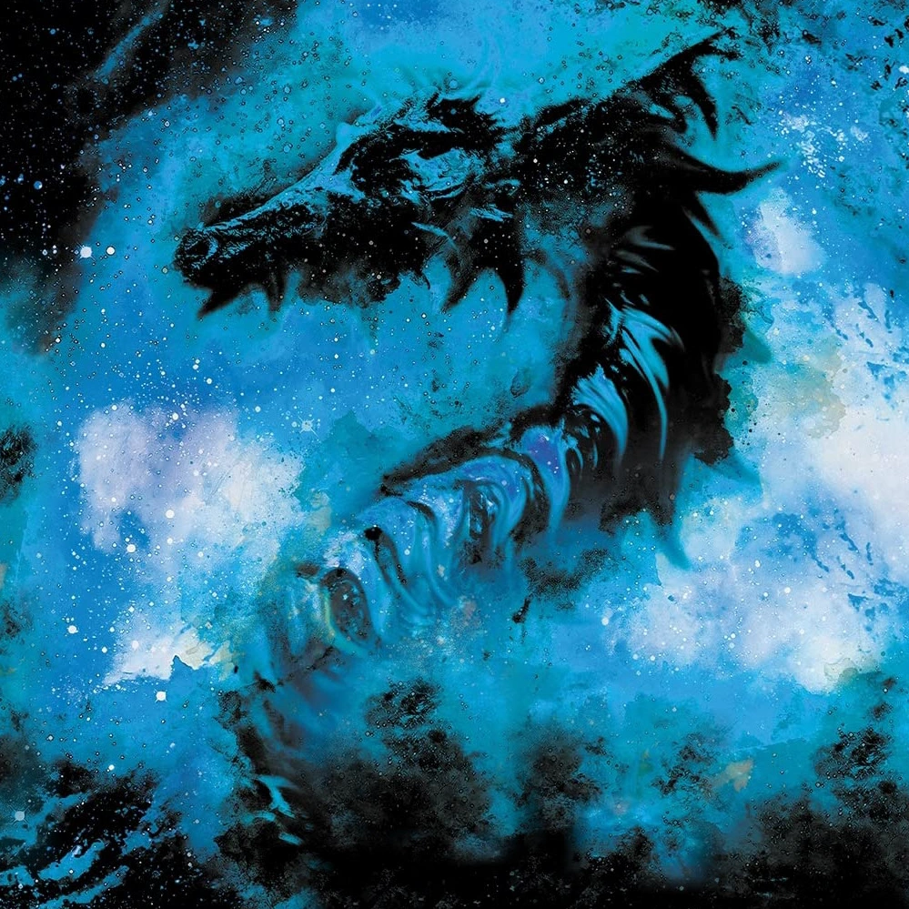

Pruinae Enneis

-
Nom: Pruinae Enneis
Surnom: La sylphide du lac Azur
Grade: Second Blanc
Race: Sienne
Particules: Astrales
Arme: Épée
Âge: 17 ans
Taille: 162 cm
Poids: 59 kg
Cheveux: Rouges
Yeux: Rubis
Présentation
Pruinae Enneis est une combattante Sienne de l'ordre de l'Apocalypsia qui manie les arts astraux. Second du Chevalier Blanc, Pruinae est aussi connue sous le nom de sylphide du lac Azur. Elle se bat pour protéger son père et réaliser son rêve de vivre une vie simple.[source]
Apparences
Pruinae Enneis est une jeune femme douce et attentionnée qui réserve parfois un caractère bien piquant. La sylphide possède de longs cheveux rouges et des yeux aux teintes rubis. Elle brandit Astoria, l'Épée Astrale, une lame aussi blanche que la plus étincelante des étoiles. Son équipement se compose d'une veste grise bordée de blanc, assortie d'une jupe, de bottes de combat et d'une chemise blanche.[source]
Histoire
Pruinae a été abandonnée dans son enfance et fut recueillie par une famille pauvre du Pauper. Elle a rejoint les armées de l'Apocalypsia afin de payer les médicaments de son père après la mort tragique de sa mère lors du 5ème Funus. À la suite des épreuves de son entraînement de Freshy, elle deviendra le Second Blanc de Nix Sieg, le Chevalier Blanc, ce qui l’amènera à rencontrer Nate Ansicht, l'épéiste aux yeux d'argent.[source]
Apparition
Pruinae Enneis apparaît dans le chapitre 08, l'Épéiste aux Yeux d'Argent, dans la deuxième partie du 1er livre de la Guerre de l'Hérésie, S'estomper vers les Ténèbres. Il s'agit d'un des personnages originels écrits par Quentin Nater.
